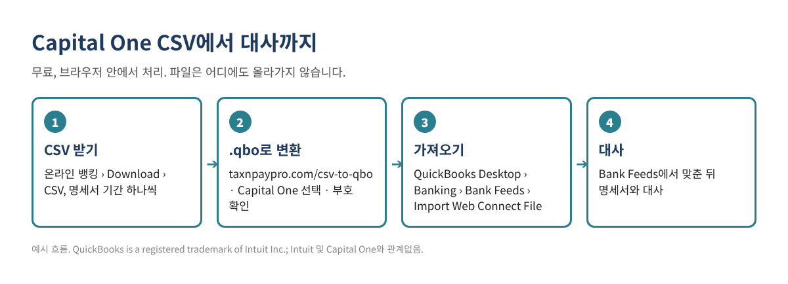

Capital One에서 거래 내역을 CSV로 받았는데, QuickBooks Desktop은 CSV를 은행 계좌에 바로 넣지 못합니다. Desktop이 받는 것은 Web Connect(.qbo) 파일이고, 오래된 버전은 IIF 파일입니다. 이 글에서는 Capital One CSV를 받는 법, 열 구성, 브라우저에서 무료로 .qbo로 바꾸는 법, 가져온 뒤 확인하는 법까지 순서대로 설명합니다.
요약: Capital One에서 CSV 받기 → 무료 CSV→QBO 변환기 열기 → 은행에서 Capital One 선택 → 미리보기와 잔액 확인 → .qbo 저장 → QuickBooks Desktop에서 Banking › Bank Feeds › Import Web Connect File.

컴퓨터에서 온라인 뱅킹에 로그인합니다(대부분 은행은 휴대폰 앱에서는 내려받기를 지원하지 않습니다). 계좌를 열고 거래 목록 위의 Download 또는 내려받기 아이콘을 찾습니다. 기간을 고르고 CSV(은행에 따라 "Spreadsheet", "Comma delimited")를 선택합니다. 메뉴 이름은 가끔 바뀌니, 안 보이면 은행 도움말에서 "download transactions"를 검색하세요.
변환기는 아래 Capital One 형식을 알아보고 열과 부호를 자동으로 맞춥니다. 형식을 알아 두면 잘못 받은 파일을 바로 알아챌 수 있습니다.
| 파일 | 열 구성 (2026년 기준) | 주의할 점 |
|---|---|---|
| 은행 계좌 | Account Number, Transaction Description, Transaction Date, Transaction Type, Transaction Amount, Balance | 금액이 모두 플러스로 나오고, "Transaction Type"(Debit/Credit)이 방향을 알려 줍니다. 변환기가 Debit을 마이너스로 바꿉니다. |
| 신용카드 | Transaction Date, Posted Date, Card No., Description, Category, Debit, Credit | 카드 사용액은 Debit 열, 결제는 Credit 열에 있습니다. |
변환기가 읽은 뒤의 모습은 아래와 같습니다. 예시 값이며 실제 거래가 아닙니다.
| 날짜 | 거래처 | 금액 (QuickBooks 부호) |
|---|---|---|
| 10/03/2026 | COFFEE SHOP #12 (예시) | -8.75 |
| 10/05/2026 | OFFICE SUPPLY STORE (예시) | -142.30 |
| 10/07/2026 | CLIENT DEPOSIT (예시) | 500.00 |
입출금 계좌 파일은 금액이 모두 플러스라서, 그대로 넣으면 출금이 입금으로 들어갑니다. 변환기 미리보기에서 부호를 꼭 확인하세요.
이 변환기는 브라우저 안에서만 작동하고 파일을 서버로 보내지 않습니다. 그래도 은행 비밀번호는 누구와도 공유하지 말고, 다 쓴 파일은 지워 두세요.
은행과 계좌 종류에 따라 주기도 합니다. 은행이 준 QuickBooks(Web Connect) 파일이 오류 없이 들어가면 그것을 쓰세요. 변환기는 CSV밖에 없거나 은행 파일이 안 들어갈 때 쓰는 도구입니다.
QuickBooks는 .qbo 파일 안의 은행 ID를 확인합니다. 변환기 설정에서 은행 ID(INTU.BID)를 바꿀 수 있고, 기본값 3000은 많은 은행에서 쓸 수 있습니다.
보통은 필요 없습니다. QuickBooks Online은 Banking 화면에서 CSV를 바로 올릴 수 있습니다. 이 글은 QuickBooks Desktop용입니다.
가져온 뒤 정리용 엑셀이 필요하시면, 중복 거래·대사 차이 찾기 키트를 무료로 받으세요(엑셀 + PDF 가이드, 가입 없음).
이 글은 일반적인 정보이며 세무·법률·회계 자문이 아닙니다. 은행 메뉴와 파일 형식은 바뀔 수 있으니 가져오기 전에 내 파일을 꼭 확인하세요. 예시 금액은 지어낸 값입니다.
QuickBooks is a registered trademark of Intuit Inc.; not affiliated with or endorsed by Intuit. Capital One은(는) 해당 회사의 상표이며, 이 글은 Capital One와(과) 관계가 없고 보증을 받지 않았습니다.
출처: Capital One: Business and QuickBooks integration · 무료 은행 CSV→QBO 변환기